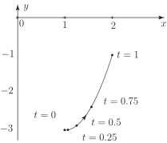

Long description: fig3_3

Alt text: A graph showing a curve plotted on a two-dimensional coordinate system with marked points indicating time intervals.
This description was generated by AI and has not been verified by a human. If you spot an error, please use the feedback link below.
- The image displays a Cartesian coordinate system with the horizontal axis labeled as \(x\) and the vertical axis labeled as \(y\).
- The axes are marked with integer increments, suggesting units of 1 for both \(x\) and \(y\).
- A smooth, upward-curving path is drawn on the graph, starting from the lower left and rising towards the upper right.
- Several discrete points are marked along this curve, each labeled with a value of \(t\) representing time or a parameter value.
- The labeled points, from the lowest to the highest, are shown at \(t = 0\), \(t = 0.25\), \(t = 0.5\), \(t = 0.75\), and \(t = 1\).
- The curve segment connecting these points indicates a progression, suggesting the path traced as \(t\) increases from zero to one.